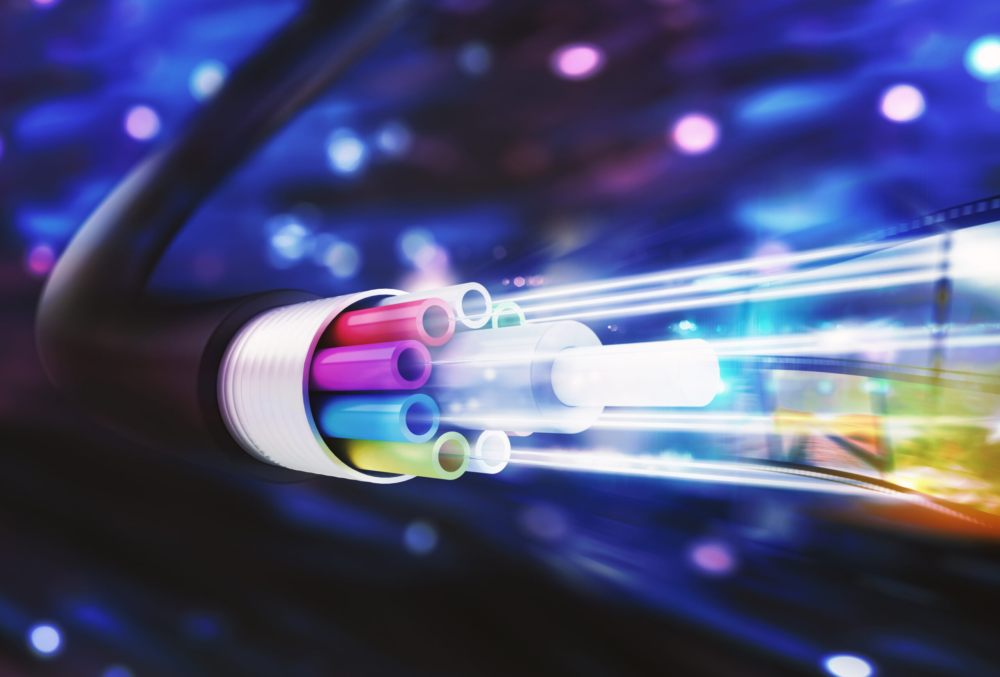
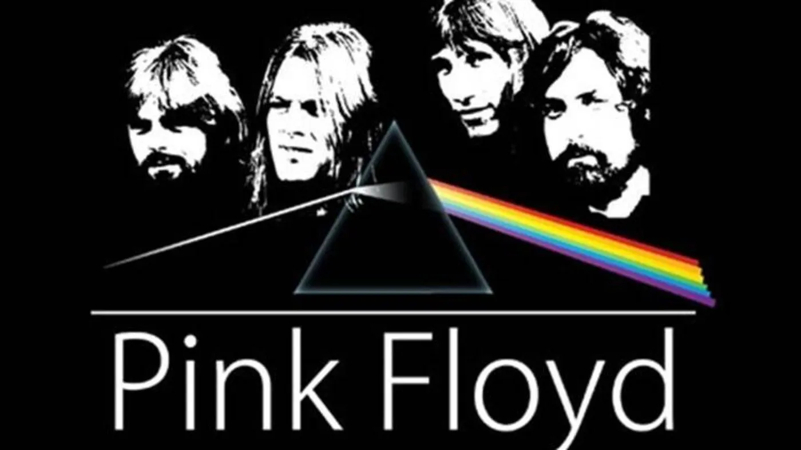

Ilumination
A luz visível é amplamente utilizada para iluminação em residências, escritórios e espaços públicos, proporcionando visibilidade e conforto visual.

Comunication
Tecnologias como a fibra óptica utilizam a luz visível para transmitir dados em alta velocidade, sendo fundamental para a internet e telecomunicações.
Medicination
Na área médica, a luz visível é empregada em procedimentos como endoscopias e terapias fotodinâmicas, auxiliando no diagnóstico e tratamento de doenças.
Fotografination e Cinemation
A captura de imagens em fotografia e cinema depende da luz visível para registrar cenas com cores e detalhes precisos.

Menções Honrosa
Pink Floyd
Christiaan Huygens

Jimmy Neutron
Agradecimentos
Robsonson, Renene, Derso